25 September 2026 · v0.3.29 / code 32
329 tests passed · Typecheck passed · Web + Android built
The same generated quadcopter sprite appears in live gameplay and the illustrated lessons. Four rotors, a front scanner lens, shared 512px alpha texture, subtle hover and retained amber report/red radio cues. Loaded once per scene; included in the scene-ready gate.
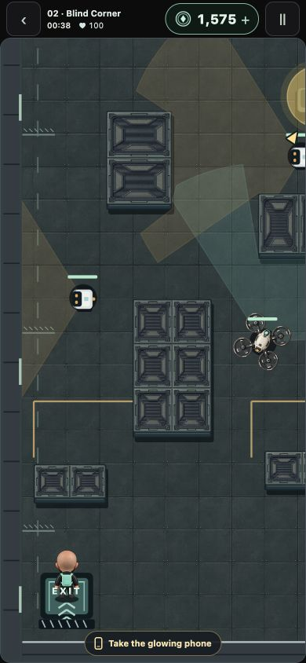
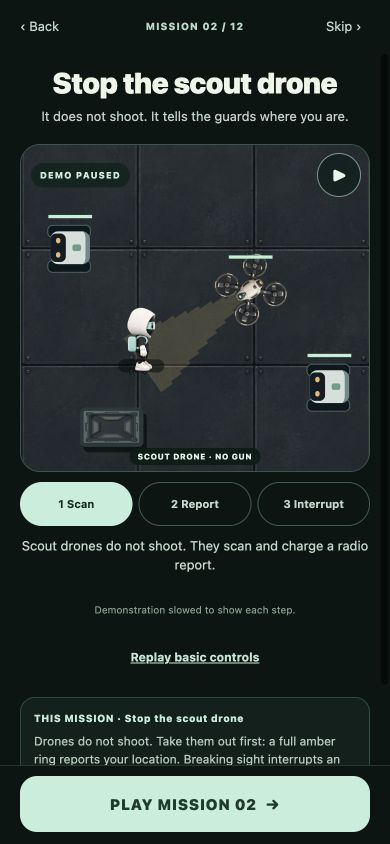
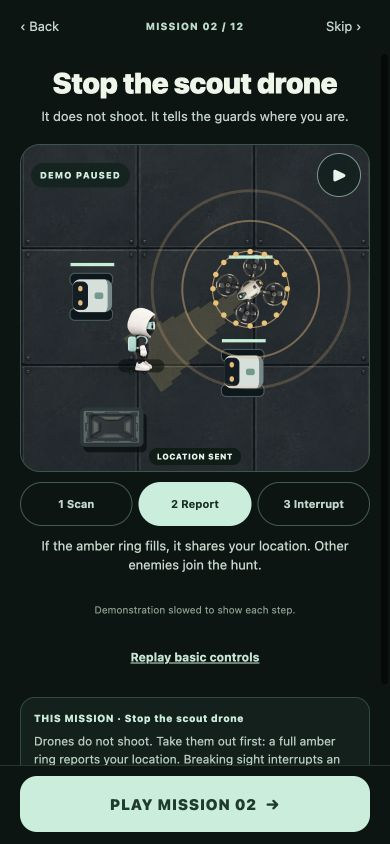
| Expected | Observed |
|---|---|
| Every campaign intro teaches its mechanic. | All 12 opened from the district map. Mission 1 shows controls; Missions 2–12 show distinct mechanics. Screenshots below. |
| Early players can learn what drones do. | “Meet the scout drone” in Mission 1 opens the scout lesson. A controls-replay link is available from each mechanic. |
| Pause and choose a lesson phase. | Scan/Report/Interrupt and Pause/Resume worked. The report phase visibly moved guards toward the courier. |
| Demo must not run the real mission or award credits. | Zero game canvases while every intro was open. Pure presentation timeline has no gameplay, network or reward mutation. |
| Play remains visible on small screens. | 56px CTA, 12px browser bottom gap at 320×568, 360×640, 390×844 and 844×390. Footer remains outside scrolling content. |
| New sprite appears in actual gameplay. | Mission 02 started and displayed all four rotors with correct facing. Pause worked. Separate test tab logged no console errors. |
| Asset reaches Android package without degradation. | APK resource res/F5.png decoded to exactly the same RGBA pixels as source. Signature and 16KB alignment verified. |
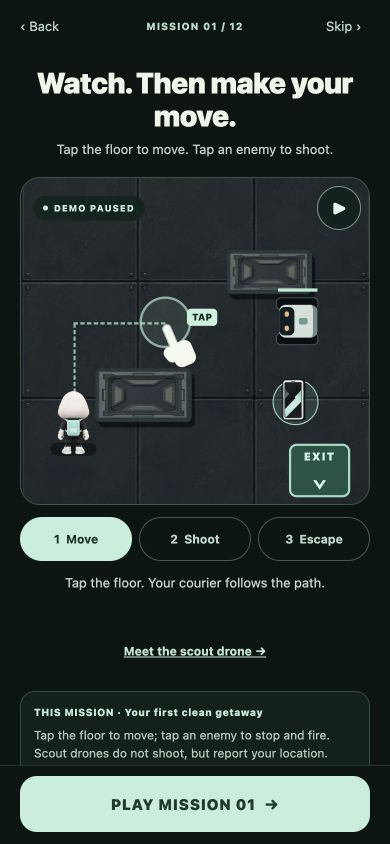
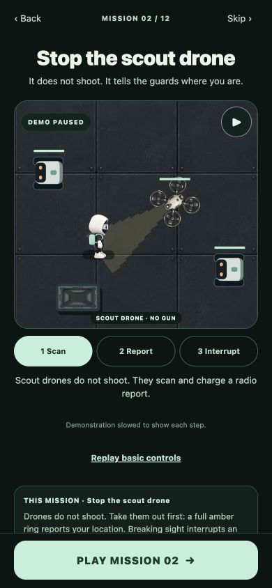
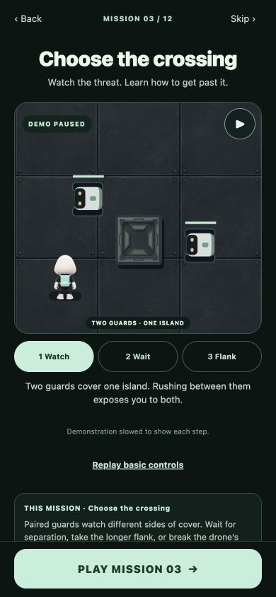
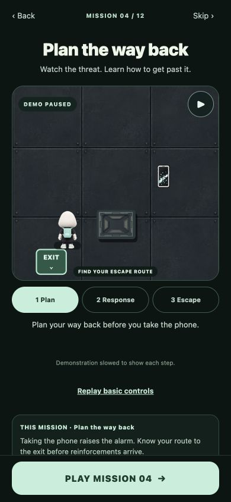
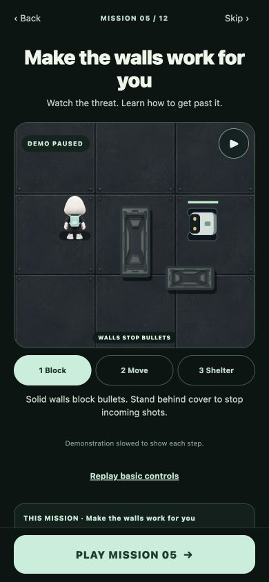
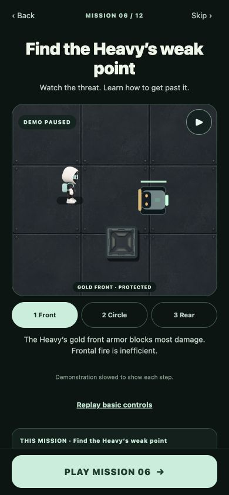
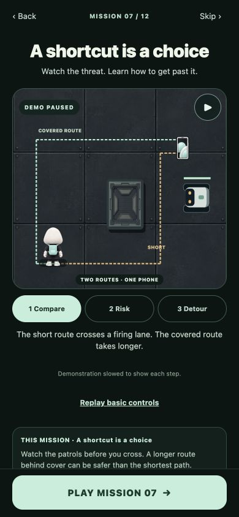
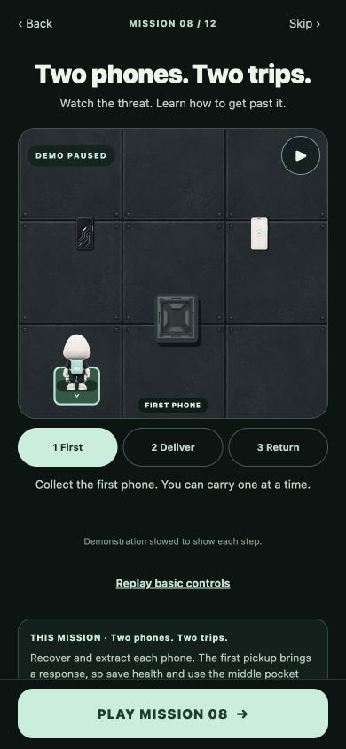
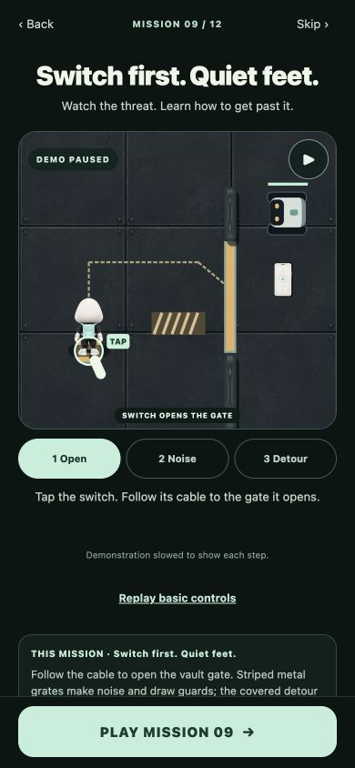
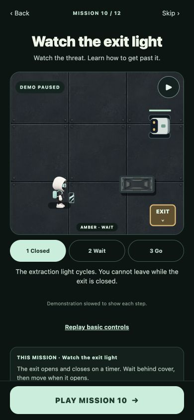
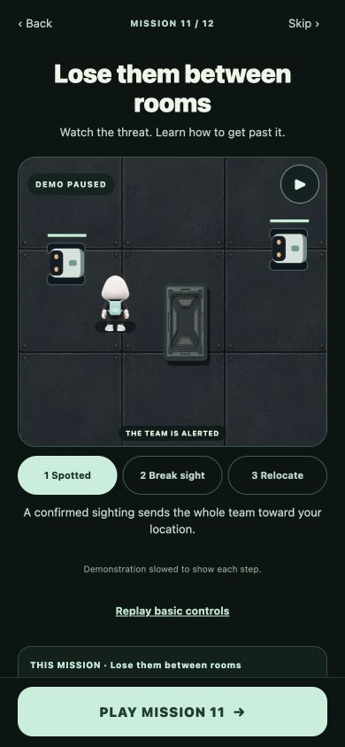
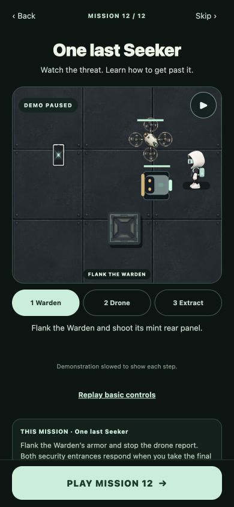
Signed mainnet APK · v0.3.29 code32
Package: com.bluntbrain.stealaseeker
SHA-256: c5cb33b50b6a8f495022a6951ab183b03ec784bcc259319ddb3ffcc8da023aa8
Package checks · Mission UI results · Responsive checks · 329 test results
This focused check did not exercise payment approval, claim rewards, or complete all missions. Nothing was submitted to the store or deployed by this update.